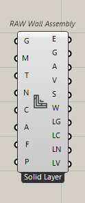
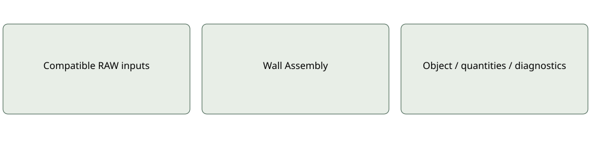

Elements
RAW Wall Assembly
Constructs measured wall elements and material-part previews. Seven modes: Solid Layer, Layered, Cavity, Framed, Rainscreen, Sandwich Panel, Curtain Wall.
Inputs: Geometry; Material/Layer Materials/Panel Material; Thickness/Layer Thicknesses/Panel Thickness; Wall Name; Wall Class; Alignment; Flip Direction; Generate Preview; mode-specific cavity/frame/support/grid data
Outputs: Wall Elements; Preview Geometry; Net Area; Volume; Summary; Warnings; Layer Meshes; Layer Colours; Layer Names; Layer Volumes
Assembly, not three generic bars; does not perform independent LCA arithmetic.Use and limitations
Optional and mode-specific ports may remain serialized when hidden. Inspect quantities, source provenance and coverage before interpreting results. A missing input is not an inferred zero.